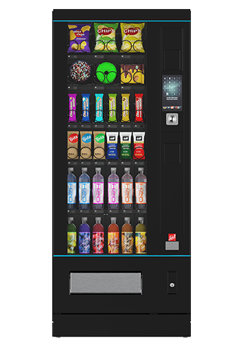

SiLine Snack & Combi
Najbardziej uniwersalny automat do produktów z gospodarstwa
To pierwszy wariant, który zwykle warto rozważyć przy sprzedaży bezpośredniej. Pozwala łączyć różne formaty produktów: butelki, kubki, pudełka, paczki, gotowe zestawy i produkty chłodzone, jeśli konfiguracja jest dobrana pod konkretny asortyment.
- Dobre rozwiązanie na sery, jogurty, masło, jaja, soki, przetwory i butelki.
- Możliwy układ spiralny albo z popychaczami, zależnie od opakowania.
- Pasuje jako drugi automat obok mlekomatu BRUNIMAT.
nabiałjajabutelkiprzetworygotowe zestawy